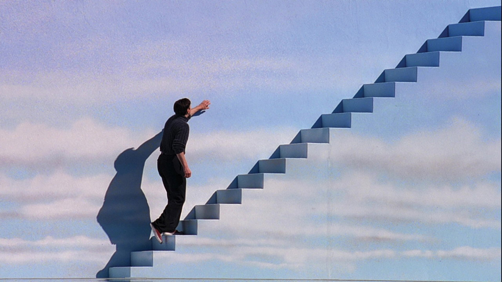

楚門的世界
The Truman Show (1998) · 導演：彼得·威爾 · 主演：金·凱瑞、蘿拉·琳妮、艾德·哈里斯
「假如再也碰不見你，祝你早安、午安，還有晚安！」
★ 多維度深度評析
綜合評析指數：9.4 / 10這部作品極度適合你，如果：
- 喜愛探討「真實 vs 虛假」、「自由意志 vs 命運安排」的哲思作品
- 想見證金·凱瑞褪去誇張肢體、展現細膩痛楚的人性演技神作
- 對自媒體、網紅實況與現代社會窺私文化有深刻共鳴與反思者
觀看前請做好心理準備，如果：
- 預期看到一整部徹頭徹尾捧腹大笑的爆笑喜劇（後半段情緒相當沉重孤寂）
- 討厭小成本溫馨風格、期待宏大動作場面或好萊塢特效者
無雷簡介與推薦指南
楚門·伯班克（金·凱瑞 飾）是一位生活在風景如畫、鄰里和睦的海景小鎮上的普通保險經紀人。他過著規律而平凡的日子，渴望探險卻對大海有著莫名的童年陰影。然而楚門絲毫不知，從他呱呱墜地的那一刻起，他的整個人生就是一場被全球超過數十億觀眾二十四小時不間斷觀看的巨型實境秀。
整個小鎮是全球最大的巨蛋型人工攝影棚，身邊深愛的妻子、形影不離的摯友、親切的鄰居，無一例外全是領薪演戲的演員。直到某天，一盞標示著天狼星的聚光燈從天空墜落，收音機意外傳出導播調度他行蹤的頻道，這座精緻謊言構築的烏托邦開始崩解。本片是金·凱瑞跳脫純狂想喜劇、邁入深度劇情片的轉型巔峰之作，笑中帶淚且發人深省。
⚠️
深度劇情剖析與結局討論（含重大劇透）
本區塊包含造物主的溫柔極權、撕裂藍天的鞠躬與電視機前隨即轉台的冷酷現實解析
▼
深度劇情剖析與結局討論（含重大劇透）
本區塊包含造物主的溫柔極權、撕裂藍天的鞠躬與電視機前隨即轉台的冷酷現實解析
#1 造物主「克里斯托弗」的狂妄與愛：溫柔鄉是最致命的監獄
實境秀總導演克里斯托弗（艾德·哈里斯 飾）名字取自基督（Christ），他在月球控制中心俯瞰眾生，宛如上帝。他對楚門抱持著扭曲的父愛，堅信外面的世界充斥著謊言與殘酷，而自己為楚門打造的海景鎮才是純淨的世外桃源。這段關係象徵了極權主義最隱蔽的面孔——以「為你好、保護你免受傷害」為名，徹底剝奪人類追求真理與冒險痛苦的自由。
#2 撞破巨幕的鞠躬：荒謬存在主義的最強抗爭
楚門克服對溺水的滅頂恐懼，揚帆「聖瑪利亞號」衝向地平線，最終小船船頭刺穿了畫著藍天白雲的厚重壁畫。當克里斯托弗從天空中如上帝般發聲警告：「外面的世界並不比我創造的更真實」時，楚門留下了一句招牌台詞，深深鞠了一躬，果斷推開黑色的逃生門走入未知。這一鞠躬，是他對長達三十年被操控人生的告別，也是人類向虛妄神祇爭取靈魂尊嚴的永恆定格。
#3 鏡頭轉向的殘酷諷刺：狂歡之後，誰又在乎楚門？
電影結尾最令人不寒而慄的並非楚門在海上的搏鬥，而是屏幕前群眾的反應。守在電視機前的警衛為楚門的逃脫歡呼雀躍，但在雪花畫面亮起後的幾秒鐘內，他們便毫不在意地翻閱節目表說道：「看看還有什麼好看的？」觀眾的廉價感動與冷酷轉台，狠狠刺痛了現代大眾傳播娛樂至死的本質——楚門付出了整個人生，卻只是世人消遣的一道快餐。